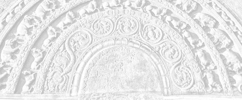

Sermon 2
Namo tassa bhagavato arahato sammāsambuddhassa
Namo tassa bhagavato arahato sammāsambuddhassa
Namo tassa bhagavato arahato sammāsambuddhassaEtaṁ santaṁ, etaṁ paṇītaṁ,
yadidaṁ sabbasaṅkhārasamatho sabbūpadhipaṭinissaggo
taṇhakkhayo virāgo nirodho nibbānaṁ.1“This is peaceful, this is excellent,
namely the stilling of all preparations, the relinquishment of all assets,
the destruction of craving, detachment, cessation, extinction.”
With the permission of the Most Venerable Great Preceptor and the assembly of the venerable meditative monks.
The second sermon on Nibbāna has come up for today. Towards the end of our sermon the other day we raised the point: Why is it improper to ask such questions as: ‘What is the purpose of Nibbāna? Why should one attain Nibbāna?’2 Our explanation was that since the holy life or the Noble Eightfold Path has Nibbāna as its ultimate aim, since it gets merged in Nibbāna, any questions as to the ultimate purpose of Nibbāna would be inappropriate.
In fact at some places in the canon we find the phrase anuttara brahmacariyapariyosāna used with reference to Nibbāna.3 It means that Nibbāna is the supreme consummation of the holy life. The following standard phrase announcing a new arahant is very often found in the suttas:
Yassatthāya kulaputtā sammadeva agārasmā anagāriyaṁ pabbajanti, tadanuttaraṁ brahmacariyapariyosānaṁ diṭṭheva dhamme sayaṁ abhiññā sacchikatvā upasampajja vihāsi.4
In this very life he realized by his own higher knowledge and attained to that supreme consummation of the holy life for the purpose of which clansmen of good family rightly go forth from home to homelessness.
Now what is the justification for saying that one attains to Nibbāna by the very completion of the holy life? This Noble Eightfold Path is a straight path:
Ujuko nāma so maggo, abhayā nāma sā disā.5
This path is called the ‘straight’ and the direction it goes is called the ‘fearless’.
In the Itivuttaka we come across a verse which expresses this idea more vividly:
Sekhassa sikkhamānassa,
ujumaggānusārino,
khayasmiṁ paṭhamaṁ ñāṇaṁ,
tato aññā anantarā.6To the learner, learning
In pursuit of the straight path,
First comes the knowledge of destruction
And then immediately the certitude.
It is the fruit of arahantship which gives him the certitude of the attainment of Nibbāna.
Here the word anantarā has been used. That concentration proper to the fruit of arahantship is called ānantarikā samādhi.7 This means that the attainment of the fruit is immediate.
Though it may be so in the case of the arahant, what about the stream-winner, the sotāpanna, one may ask. There is a general belief that in the case of a sotāpanna the vision of Nibbāna is like a glimpse of a distant lamp on a road with many bends and the sotāpanna has just negotiated the first bend.
But in accordance with the Dhamma it may be said that the norm of immediacy is applicable even to the knowledge of the first path. One who attains to the fruit of stream-winning may be a beggar, an illiterate person, or a seven year old child. It may be that he has heard the Dhamma for the first time. All the same, a long line of epithets is used with reference to him in the suttas as his qualifications:
Diṭṭhadhammo pattadhammo viditadhammo pariyogāḷhadhammo tiṇṇavicikiccho vigatakathaṁkatho vesārajjappatto aparappaccayo satthusāsane.8
Diṭṭhadhammo, he is one who has seen the Dhamma, the truth of Nibbāna. It is said in the Ratanasutta that along with the vision of the first path, three fetters are abandoned, namely sakkāyadiṭṭhi, the self-hood view, vicikicchā, sceptical doubt, and sīlabbataparāmāsa, attachment to holy vows and ascetic practices.9 Some might argue that only these fetters are abandoned at this stage, because it is a glimpse of Nibbāna from a distance.
But then there is this second epithet, pattadhammo, which means that he has reached the Dhamma, that he has arrived at Nibbāna.
Not only that, he is viditadhammo, he is one who has understood the Dhamma, which is Nibbāna.
He is pariyogāḷhadhammo, he has plunged into the Dhamma, he has dived into the Dhamma, which is Nibbāna.
He is tiṇṇavicikiccho, he has crossed over doubts.
Vigatakathaṁkatho, his waverings are gone.
Vesārajjappatto, he has attained to proficiency.
Aparappaccayo satthusāsane, in regard to the dispensation of the teacher he is not dependent on others. And that is to say that he could attain to Nibbāna even without another’s help, though of course with the teacher’s help he would attain it sooner.
So this string of epithets testifies to the efficacy of the realization by the first path. It is not a mere glimpse of Nibbāna from a distance. It is a reaching, an arrival or a plunge into Nibbāna.
For purposes of illustration we may bring in a legend connected with the history of Sri Lanka. It is said that when King Gajabāhu invaded India, one of his soldiers, Nīla, who had Herculean strength, parted the seawater with a huge iron bar in order to make way for the king and the army. Now when the supramundane path arises in the mind the power of thought is as mighty as the blow of Nīla with his iron bar. Even with the first blow the sea-water parted, so that one could see the bottom.
Similarly the sweeping influxes are parted for a moment when the transcendental path arises in a mind, enabling one to see the very bottom – Nibbāna. In other words, all preparations (saṅkhāras) are stilled for a moment, enabling one to see the cessation of preparations.
We have just given a simile by way of illustration, but incidentally there is a Dhammapada verse which comes closer to it:
Chinda sotaṁ parakkamma,
kāme panuda brāhmaṇa,
saṅkhārānaṁ khayaṁ ñatvā,
akataññū’si brāhmaṇa.10Strive forth and cut off the stream,
Discard, oh Brahmin, sense-desires,
Having known the destruction of preparations, oh Brahmin,
Become a knower of the un-made.
So this verse clearly indicates what the knowledge of the path does when it arises. Just as one leaps forward and cuts off a stream of water, so it cuts off, even for a moment, the preparations connected with craving. Thereby one realizes the destruction of preparations – saṅkhārānaṁ khayaṁ ñatvā.
Like the sea water parted by the blow of the iron bar, preparations part for a moment to reveal the very bottom which is ‘unprepared’, the asaṅkhata. Akata, or the un-made, is the same as asaṅkhata, the unprepared. So one has had a momentary vision of the sea bottom, which is free from preparations. Of course, after that experience, influxes flow in again. But one kind of influxes, namely diṭṭhāsavā, influxes of views, are gone for good and will never flow in again.
Now how was it that some with keen wisdom like Bāhiya attained arahantship even while listening to a short sermon from the Buddha? They had dealt four powerful blows in quick succession with the iron bar of the path-knowledge to clear away all possible influxes.
What is called akata or asaṅkhata, the un-made or the un-prepared, is not something out there in a distance, as an object of thought. It is not a sign to be grasped by one who wants to attain Nibbāna.
Language encourages us to think in terms of signs. Very often we find it difficult to get rid of this habit. The worldlings with their defilements have to communicate with each other and the structure of the language has to answer their needs. So the subject-object relationship has become a very significant feature in a language. It always carries the implication that there is a thing to be grasped and that there is someone who grasps, that there is a doer and a thing done. So it is almost impossible to avoid such usages as: ‘I want to see Nibbāna, I want to attain Nibbāna’. We are made to think in terms of getting and attaining.
However sometimes the Buddha reminds us that this is only a conventional usage and that these worldly usages are not to be taken too seriously. We come across such an instance in the Sagāthavagga of the Saṁyutta Nikāya where the Buddha retorts to some questions put by a certain deity. The deity named Kakudha asks the Buddha:
“Do you rejoice, oh recluse?”11 And the Buddha retorts: “On getting what, friend?” Then the deity asks: “Then, recluse, do you grieve?” And the Buddha quips back: “On losing what, friend?” So the deity concludes: “Well then, recluse, you neither rejoice nor grieve!” And the Buddha replies: “That is so, friend.”
It seems, then, that though we say we ‘attain’ Nibbāna there is nothing to gain and nothing to lose. If anything – what is lost is an ignorance that there is something, and a craving that there is not enough – and that is all one loses.
Now there are quite a number of synonyms for Nibbāna, such as akata and asaṅkhata. As already mentioned, there is even a list of thirty-three such epithets, out of which one is dīpa.12 Now dīpa means an island. When we are told that Nibbāna is an island, we tend to imagine some sort of existence in a beautiful island. But in the Pārāyanavagga of the Sutta Nipāta the Buddha gives a good corrective to that kind of imagining in his reply to a question put by the Brahmin youth Kappa, a pupil of Bāvarī. Kappa puts his question in the following impressive verse:
Majjhe sarasmiṁ tiṭṭhataṁ,
oghe jāte mahabbhaye,
jarāmaccuparetānaṁ,
dīpaṁ pabrūhi mārisa,
tvañca me dīpam akkhāhi,
yathayidaṁ nāparaṁ siyā.13Unto them that stand midstream,
When the frightful floods flow forth,
To them in decay-and-death forlorn,
An island, sire, may you proclaim.
An island which non else excels,
Yea, such an isle, pray tell me sire.
And the Buddha gives his answer in two inspiring verses:
Majjhe sarasmiṁ tiṭṭhataṁ,
oghe jāte mahabbhaye,
jarāmaccuparetānaṁ,
dīpaṁ pabrūmi Kappa te.Akiñcanaṁ anādānaṁ,
etaṁ dīpaṁ anāparaṁ,
nibbānaṁ iti naṁ brūmi,
jarāmaccuparikkhayaṁ.Unto them that stand midstream,
When the frightful floods flow forth,
To them in decay-and-death forlorn,
An island, Kappa, I shall proclaim.Owning naught, grasping naught,
The isle is this, none else besides.
Nibbāna, that is how I call that isle,
Wherein is decay decayed and death is dead.
Akiñcanaṁ means ‘owning nothing’, anādānaṁ means ‘grasping nothing’. Etaṁ dīpaṁ anāparaṁ, this is the island, nothing else. Nibbānaṁ iti naṁ brūmi, jarāmaccuparikkhayaṁ, “and that I call Nibbāna, which is the extinction of decay-and-death.”
From this also we can infer that words like akata, asaṅkhata and sabba-saṅkhārā-samatha are full fledged synonyms of Nibbāna. Nibbāna is not some mysterious state quite apart from them. It is not something to be projected into a distance.
Some are in the habit of getting down to a discussion on Nibbāna by putting saṅkhata on one side and asaṅkhata on the other side. They start by saying that saṅkhata, or the ‘prepared’, is anicca, or impermanent. If saṅkhata is anicca, they conclude that asaṅkhata must be nicca, that is the unprepared must be permanent. Following the same line of argument they argue that since saṅkhata is dukkha, asaṅkhata must be sukha.
But when they come to the third step, they get into difficulties. If saṅkhata is anattā, or not-self, then surely asaṅkhata must be attā, or self. At this point they have to admit that their argument is too facile and so they end up by saying that after all Nibbāna is something to be realized.
All this confusion arises due to a lack of understanding of the law of Dependent Arising, paṭicca samuppāda. Therefore, first of all, we have to say something about the doctrine of paṭicca samuppāda.
According to the Ariyapariyesanasutta of the Majjhima Nikāya, the Buddha, soon after his enlightenment, reflected on the profundity of the Dhamma and was rather disinclined to preach it. He saw two points in the doctrine that are difficult for the world to see or grasp. One was paṭicca samuppāda:
Duddasaṁ idaṁ ṭhānaṁ yadidaṁ idappaccayatā paṭiccasamuppādo.14
Hard to see is this point, namely dependent arising which is a relatedness of this to that.
And the second point was Nibbāna:
Idampi kho ṭhānaṁ duddasaṁ yadidaṁ sabbasaṅkhārasamatho sabbūpadhipaṭinissaggo taṇhakkhayo virāgo nirodho nibbānaṁ.
And this point, too, is difficult to see, namely the stilling of all preparations, the relinquishment of all assets, the destruction of craving, detachment, cessation, extinction.
From this context we can gather that if there is any term we can use to define paṭicca samuppāda, a term that comes closer to it in meaning, it is idappaccayatā. The Buddha himself has described paṭicca samuppāda in this context as a relatedness of this to that, idappaccayatā. As a matter of fact the basic principle which forms the noble norm of this doctrine of dependent arising is this idappaccayatā. Let us now try to get at its meaning by examining the doctrine of paṭicca samuppāda.
In quite a number of contexts, such as the Bahudhātukasutta of the Majjhima Nikāya and the Bodhivagga of the Udāna the law of paṭicca samuppāda is set out in the following manner:
Iti imasmiṁ sati idaṁ hoti,
imassuppādā idaṁ uppajjati
imasmiṁ asati idaṁ na hoti,
imassa nirodhā idaṁ nirujjhati –yadidaṁ avijjāpaccayā saṅkhārā, saṅkhārapaccayā viññāṇaṁ, viññāṇapaccayā nāmarūpaṁ, nāmarūpapaccayā saḷāyatanaṁ, saḷāyatanapaccayā phasso, phassapaccayā vedanā, vedanāpaccayā taṇhā, taṇhāpaccayā upādānaṁ, upādānapaccayā bhavo, bhavapaccayā jāti, jātipaccayā jarāmaraṇaṁ sokaparidevadukkhadomanassūpāyāsā sambhavanti. Evametassa kevalassa dukkhakkhandhassa samudayo hoti.
Avijjāyatveva asesavirāganirodhā saṅkhāranirodho, saṅkhāranirodhā viññāṇanirodho, viññāṇanirodhā nāmarūpanirodho, nāmarūpanirodhā saḷāyatananirodho, saḷāyatananirodhā phassanirodho, phassanirodhā vedanānirodho, vedanānirodhā taṇhānirodho, taṇhānirodhā upādānanirodho, upādānanirodhā bhavanirodho, bhavanirodhā jātinirodho, jātinirodhā jarāmaraṇaṁ sokaparidevadukkhadomanassūpāyāsā nirujjhanti. Evametassa kevalassa dukkhakkhandhassa nirodho hoti.15
Thus: – This being – this comes to be
With the arising of this – this arises
This not being – this does not come to be
With the cessation of this – this ceases.And that is to say, dependent on ignorance, preparations come to be; dependent on preparations, consciousness; dependent on consciousness, name-and-form; dependent on name-and-form, the six sense-bases; dependent on the six sense-bases, contact; dependent on contact, feeling; dependent on feeling, craving; dependent on craving, grasping; dependent on grasping, becoming; dependent on becoming, birth; dependent on birth, decay-and-death, sorrow, lamentation, pain, grief and despair come to be. Thus is the arising of this entire mass of suffering.
But with the complete fading away and cessation of ignorance, comes the cessation of preparations; with the cessation of preparations, the cessation of consciousness; with the cessation of consciousness, the cessation of name-and-form; with the cessation of name-and-form, the cessation of the six sense-bases; with the cessation of the six sense-bases, the cessation of contact; with the cessation of contact, the cessation of feeling; with the cessation of feeling, the cessation of craving; with the cessation of craving, the cessation of grasping; with the cessation of grasping, the cessation of becoming; with the cessation of becoming, the cessation of birth; with the cessation of birth, the cessation of decay-and-death, sorrow, lamentation, pain, grief and despair cease to be. Thus is the cessation of this entire mass of suffering.
This is the thematic statement of the law of paṭicca samuppāda. It is set out here in the form of a fundamental principle.
Imasmiṁ sati idaṁ hoti, “this being, this comes to be.”
Imassuppādā idaṁ uppajjati, “with the arising of this, this arises.”
Imasmiṁ asati idaṁ na hoti, “this not being, this does not come to be”.
Imassa nirodhā idaṁ nirujjhati, “with the cessation of this, this ceases.”
It resembles an algebraical formula.
And then we have the conjunctive yadidaṁ, which means ‘namely this’ or ‘that is to say’. This shows that the foregoing statement is axiomatic and implies that what follows is an illustration. So the twelve linked formula beginning with the words avijjāpaccayā saṅkhārā is that illustration. No doubt the twelve-linked formula is impressive enough. But the important thing here is the basic principle involved, and that is the fourfold statement beginning with imasmiṁ sati.
This fact is very clearly brought out in a certain sutta in the Nidānavagga of the Saṁyutta Nikāya. There the Buddha addresses the monks and says:
Paṭiccasamuppādañca vo, bhikkhave, desessāmi paṭiccasamuppanne ca dhamme.16
Monks, I will teach you dependent arising and things that are dependently arisen.
In this particular context the Buddha makes a distinction between dependent arising and things that are dependently arisen. In order to explain what is meant by dependent arising, or paṭicca samuppāda, he takes up the last two links in the formula, in the words: jātipaccayā, bhikkhave, jarāmaraṇaṁ, “monks, dependent on birth is decay-and-death.”
Then he draws attention to the importance of the basic principle involved: Uppādā vā Tathāgatānaṁ anuppādā vā Tathāgatānaṁ, ṭhitā va sā dhātu dhammaṭṭhitatā dhammaniyāmatā idappaccayatā (etc.). Out of the long exhortation given there, this is the part relevant to us here.
Jātipaccayā, bhikkhave, jarāmaraṇaṁ, “dependent on birth, oh monks, is decay-and-death”, and that is to say that decay-and-death has birth as its condition.
Uppādā vā Tathāgatānaṁ anuppādā vā Tathāgatānaṁ, “whether there be an arising of the Tathāgatās or whether there be no such arising”.
Ṭhitā va sā dhātu dhammaṭṭhitatā dhammaniyāmatā idappaccayatā, “that elementary nature, that orderliness of the Dhamma, that norm of the Dhamma, the relatedness of this to that does stand as it is.”
So from this it is clear that the underlying principle could be understood even with the help of a couple of links. But the commentary seems to have ignored this fact in its definition of the term idappaccayatā. It says:
Imesaṁ jarāmaraṇādīnaṁ paccayā idappaccayā, idappaccayāva idappaccayatā.17
The word imesaṁ is in the plural and this indicates that the commentator has taken the dependence in a collective sense. But it is because of the fact that even two links are sufficient to illustrate the law, that the Buddha follows it up with the declaration that this is the paṭicca samuppāda. And then he goes on to explain what is meant by ‘things dependently arisen’:
Katame ca, bhikkhave, paṭiccasamuppannā dhammā? Jarāmaraṇaṁ, bhikkhave, aniccaṁ saṇkhataṁ paṭiccasamuppannaṁ khayadhammaṁ vayadhammaṁ virāgadhammaṁ nirodhadhammaṁ.
“What, monks, are things dependently arisen?” And then, taking up just one of the last links, he declares: “decay-and-death, monks, is impermanent, prepared, dependently arisen, of a nature to get destroyed, to pass away, fade away and cease.”
By the way, the word virāga usually means detachment or dispassion. But in such contexts as avijjāvirāgā and pītiyā ca virāgā one has to render it by words like ‘fading away’. So that avijjāvirāga could be rendered as: ‘by the fading away of ignorance’, and pītiyā virāgā would mean ‘by the fading away of joy’.
It seems, then, that decay-and-death themselves are impermanent, that they are prepared or made up, that they are dependently arisen. Decay-and-death themselves can get destroyed and pass away. Decay as well as death can fade away and cease.
Then the Buddha takes up the preceding link jāti, or birth. And that too is given the same qualifications. In the same manner he takes up each of the preceding links up to and including ignorance, avijjā, and applies to them the above qualifications. It is significant that every one of the twelve links, even ignorance, is said to be dependently arisen.
Let us try to understand how, for instance, decay-and-death themselves can get destroyed or pass away. Taking the idappaccayatā formula as a paradigm, we can illustrate the relationship between the two links birth and decay-and-death. Instead of saying: this being, that comes to be (and so forth), now we have to say: birth being, decay-and-death comes to be. With the arising of birth, decay-and-death arises. Birth not being, decay-and-death does not come to be. With the cessation of birth, decay-and-death ceases.
Now birth itself is an arising. But here we can’t help saying that birth ‘arises’. It is like saying that birth is born. How can birth get born? Similarly death is a passing away. But here we have to say that death itself ‘passes away’. How can death pass away? Perhaps, as we proceed, we might get the answers to these questions.
Now at this point let us take up for discussion a certain significant passage in the Mahānidānasutta of the Dīgha Nikāya. In the course of an exposition of the law of paṭicca samuppāda, addressed to Venerable Ānanda, the Buddha makes the following statement:
Ettāvatā kho, Ānanda, jāyetha vā jīyetha vā mīyetha vā cavetha vā upapajjetha vā. Ettāvatā adhivacanapatho, ettāvatā niruttipatho, ettāvatā paññattipatho, ettāvatā paññāvacaraṁ, ettāvatā vaṭṭaṁ vattati itthattaṁ paññāpanāya yadidaṁ nāmarūpaṁ saha viññāṇena.18
In so far only, Ānanda, can one be born, or grow old, or die, or pass away, or reappear, in so far only is there any pathway for verbal expression, in so far only is there any pathway for terminology, in so far only is there any pathway for designation, in so far only is the range of wisdom, in so far only is the round kept going for there to be a designation as the this-ness, that is to say: name-and-form together with consciousness.
We have rendered the term itthatta by ‘this-ness’, and what it means will become clear as we go on. In the above quotation the word ettāvatā, which means ‘in so far only’, has as its point of reference the concluding phrase yadidaṁ nāmarūpaṁ saha viññāṇena, “that is to say: name-and-form together with consciousness”.
So the statement, as it is, expresses a complete idea. But some editions have an additional phrase: aññamaññapaccayatā pavattati, “exists in a mutual relationship”. This phrase is obviously superfluous and is probably a commentarial addition.
What is meant by the Buddha’s statement is that name-and-form together with consciousness is the rallying point for all concepts of birth, decay, death and rebirth. All pathways for verbal expression, terminology and designation converge on name-and-form together with consciousness. The range of wisdom extends only up to the relationship between these two. And it is between these two that there is a whirling round so that one may point out a this-ness. In short, the secret of the entire saṁsāric existence is to be found in this whirlpool.
Vaṭṭa and āvaṭṭa are words used for a whirlpool. We shall be bringing up quotations in support of that meaning. It seems, however, that this meaning has got obscured in the course of time. In the commentaries and in some modern translations there is quite a lot of confusion with regard to the meaning of the phrase vaṭṭaṁ vattati. In fact one Sinhala translation renders it as ‘saṁsāric rain’. What rain has to do with saṁsāra is a matter for conjecture.
What is actually meant by vaṭṭaṁ vattati is a whirling round, and saṁsāra, even literally, is that. Here we are told that there is a whirling round between name-and-form and consciousness, and this is the saṁsāric whirlpool to which all the aforesaid things are traceable.
Already in the first sermon we tried to show that name in name-and-form has to do with names and concepts.19 Now from this context it becomes clear that all pathways for verbal expression, terminology and designation converge on this whirlpool between name-and-form and consciousness.
Now that we have attached so much significance to a whirlpool, let us try to understand how a whirlpool is formed. Let us try to get at the natural laws underlying its formation. How does a whirlpool come to be?
Suppose a river is flowing downward. To flow downward is in the nature of a river. But a certain current of water thinks: “I can and must move upstream.” And so it pushes on against the main stream. But at a certain point its progress is checked by the main stream and is thrust aside, only to come round and make a fresh attempt, again and again.
All these obstinate and unsuccessful attempts gradually lead to a whirling round. As time goes on, the run-away current understands, as it were, that it cannot move forward. But it does not give up. It finds an alternative aim in moving towards the bottom. So it spirals downward, funnel-like, digging deeper and deeper towards the bottom, until an abyss is formed. Here then we have a whirlpool.
While all this is going on, there is a crying need to fill up the chasm, and the whirlpool develops the necessary force of attraction to cater to it. It attracts and grasps everything that comes within its reach and sends it whirling down, funnel like, into the chasm. The whirling goes on at a tremendous speed, while the circumference grows larger and larger. At last the whirlpool becomes a centre of a tremendous amount of activity.
While this kind of activity is going on in a river or a sea, there is a possibility for us to point it out as ‘that place’ or ‘this place’. Why? Because there is an activity going on. Usually, in the world, the place where an activity is going on is known as a ‘unit’, a ‘centre’, or an ‘institution’. Since the whirlpool is also a centre of activity, we may designate it as a ‘here’ or ‘there’. We may even personify it. With reference to it, we can open up pathways for verbal expression, terminology and designation.
But if we are to consider the form of activity that is going on here, what is it after all? It is only a perversion. That obstinate current thought to itself, out of delusion and ignorance: I can and must move upstream. And so it tried and failed, but turned round only to make the same vain attempt again and again. Ironically enough, even its progress towards the bottom is a stagnation.
So here we have ignorance on one side and craving on the other, as a result of the abyss formed by the whirlpool. In order to satisfy this craving there is that power of attraction: grasping. Where there is grasping, there is existence, or bhava. The entire whirlpool now appears as a centre of activity.
Now the basic principle underlying this whirlpool is to be found in our bodies. What we call ‘breathing’ is a continuous process of emptying and filling up. So even the so-called ‘life-principle’ is not much different from the activity of a whirlpool. The functioning of the lungs and the heart is based on the same principle and the blood circulation is in fact a whirling round. This kind of activity is very often known as ‘automatic’, a word which has connotations of self-sufficiency. But at the root of it there is a perversion, as we saw in the case of the whirlpool. All these activities are based on a conflict between two opposite forces.
In fact existence in its entirety is not much different from the conflict of that obstinate current of water with the main stream. This characteristic of conflict is so pervasive that it can be seen even in the basic laws governing the existence of a society. In our social life, rights and responsibilities go hand in hand. We can enjoy certain privileges, provided we fulfil our duties. So here too we have a tangle within and a tangle without.20
Now this is about the existence of the society as such. And what about the field of economics? There too the basic principles show the same weakness. Production is governed by laws of supply and demand. There will be a supply so long as there is a demand. Between them there is a conflict. It leads to many complications. The price mechanism is on a precarious balance and that is why some wealthy countries are forced to the ridiculous position of dumping their surplus into the sea.
All this shows that existence is basically in a precarious position. To illustrate this, let us take the case of two snakes of the same size, trying to swallow up each other. Each of them tries to swallow up the other from the tail upwards and when they are half way through the meal, what do we find? A snake cycle. This snake cycle goes round and round, trying to swallow up each other. But will it ever be successful?
The precarious position illustrated by the snake cycle, we find in our own bodies in the form of respiration, blood circulation and so forth. What appears as the stability in the society and in the economy, is similarly precarious. It is because of this conflict, this unsatisfactoriness, that the Buddha concluded that the whole of existence is suffering.
When the arising aspect is taken too seriously, to the neglect of the cessation aspect, instead of a conflict or an unsatisfactoriness one tends to see something automatic everywhere. This body as well as machines such as water pumps and electrical appliances seem to work on an automatic principle. But in truth there is only a conflict between two opposing forces. When one comes to think of it, there is no ‘auto’-ness even in the automatic.
All that is there, is a bearing up with difficulty. And this in fact is the meaning of the word dukkha. Duḥ stands for ‘difficulty’ and kha for ‘bearing up’. Even with difficulty one bears it up, and though one bears it up, it is difficult.
Now regarding the question of existence we happened to mention that because of a whirlpool’s activity, one can point out a ‘here’ with reference to it. We can now come back to the word itthattaṁ, which we left out without comment in the quotation:
ettāvatā vaṭṭaṁ vattati itthattaṁ paññāpanāya
in so far only does the whirlpool whirl for the designation of an itthatta.
Now what is this itthatta? Ittha means ‘this’, so itthattaṁ would mean ‘this-ness’. The whirling of a whirlpool qualifies itself for a designation as a ‘this’.
There are a couple of verses in the Dvayatānupassanāsutta of the Sutta Nipāta which bring out the meaning of this word more clearly:
Jāti maraṇa saṁsāraṁ,
ye vajanti punappunaṁ,
itthabhāvaññathābhāvaṁ,
avijjāyeva sā gati.21Taṇhā dutiyo puriso,
dīgham addhāna saṁsāraṁ,
itthabhāvaññathābhāvaṁ,
saṁsāraṁ nātivattati.22
Ye jāti maraṇa saṁsāraṁ punappunaṁ vajanti, “they that go on again and again the round of birth and death”.
Itthabhāvaññathābhāvaṁ “which is a this-ness and an otherwise-ness”, or “which is an alternation between a this-ness and an otherwise-ness”.
Sā gati avijjāya eva, “that going of them, that faring of them, is only a journey of ignorance.”
Taṇhā dutiyo puriso, “the man with craving as his second” (or his companion).
Dīgham addhāna saṁsāraṁ, “faring on for a long time in saṁsāra”.
Itthabhāvaññathābhāvaṁ, saṁsāraṁ nātivattati, “does not get away from the round which is a this-ness and an otherwise-ness”, or “which is an alternation between a this-ness and an otherwise-ness”. What is meant by it, is the transcendence of saṁsāra.
We saw above how the concept of a ‘here’ arose with the birth of a whirlpool. In fact one’s birth is at the same time the birth of a ‘here’ or ‘this place’. And that is what is meant by itthabhāva in the two verses quoted above. Itthabhāva and itthatta both mean ‘this-ness’. In both verses this ‘this-ness’ is coupled with an otherwise-ness, aññathābhāva.
Here too we see a conflict between two things, this-ness and otherwise-ness. The cycle of saṁsāra, represented by birth and death, jāti maraṇa saṁsāraṁ, is equivalent to an alternation between this-ness and otherwise-ness, itthabhāvaññathābhāva. And as the first verse says, this recurrent alternation between this-ness and otherwise-ness is nothing but a journey of ignorance itself.
Though we have given so much significance to the two terms itthabhāva and aññathābhāva, the commentary to the Sutta Nipāta treats them lightly. It explains itthabhāvaṁ as imaṁ manussabhāvaṁ, which means “this state as a human being”, and aññathābhāvaṁ as ito avasesa aññanikāyabhāvaṁ, “any state of being other than this”.23 This explanation misses the deeper significance of the word itthatta.
In support of this we may refer to the Pāṭikasutta of the Dīgha Nikāya. There we are told that when the world system gets destroyed at the end of an aeon, some being or other gets reborn in an empty Brahma mansion, and after being there for a long time, thinks, out of a feeling of loneliness:
Aho vata aññepi sattā itthattaṁ āgaccheyyuṁ.24
How nice it would be if other beings also come to this state.
In this context the word itthatta refers to the Brahma world and not the human world. From the point of view of the Brahmas, itthatta refers to the Brahma world and only for us here, it means the human world.
However this is just a narrow meaning of the word itthatta. When the reference is to the entire round of existence or saṁsāra, itthatta does not necessarily mean ‘this human world’. The two terms have a generic sense, because they represent some basic principle. As in the case of a whirlpool, this-ness is to be seen together with an otherwise-ness. This illustrates the conflict characteristic of existence. Wherever a this-ness arises, a possibility for an otherwise-ness comes in. Itthabhāva and aññathābhāva go together.
Aniccatā, or impermanence, is very often explained with the help of the phrase vipariṇāmaññathābhāva.25 Now here too we have the word aññathābhāva. Here the word preceding it, gives a clue to its true significance.
Vipariṇāma is quite suggestive of a process of evolution. Strictly speaking, pariṇāma is evolution, and pariṇata is the fully evolved or mature stage. The prefix vi stands for the anti-climax. The evolution is over, now it is becoming other. Ironically enough, this state of ‘becoming-other’ is known as otherwise-ness, aññathābhāva. And so this twin, itthabhāva and aññathābhāva, tell us the nature of the world. Between them, they explain for us the law of impermanence.
In the Section-of-the-Threes in the Aṅguttara Nikāya the three characteristics of a saṅkhata are explained in this order:
Uppādo paññāyati, vayo paññāyati, ṭhitassa aññathattaṁ paññāyati26
an arising is manifest, a passing away is manifest and an otherwise-ness in the persisting is manifest.
This implies that the persistence is only apparent and that is why it is mentioned last. There is an otherwise-ness even in this apparently persistent. But later scholars preferred to speak of three stages as uppāda, ṭhiti, bhaṅga,27 “arising, persistence and breaking up”.
However the law of impermanence could be sufficiently understood even with the help of two words, itthabhāva and aññathābhāva, this-ness and otherwise-ness. Very often we find the Buddha summing up the law of impermanence in the two words samudaya and vaya, ‘arising’ and ‘passing away’.28
There is an apparent contradiction in the phrase ṭhitassa aññathatta, but it reminds us of the fact that what the world takes as static or persisting is actually not so. The so-called ‘static’ is from beginning to end an otherwise-ness. Now if we are to relate this to the two links jāti and jarāmaraṇaṁ in paṭicca samuppāda, we may say that as soon as one is born the process of otherwise-ness sets in. Wherever there is birth, there is death. One of the traditional Pāli verses on the reflections on death has the following meaningful lines:
Uppattiyā sahevedaṁ, maraṇam āgataṁ sadā29
always death has come, even with the birth itself.
Just as in a conjoined pair, when one is drawn the other follows, even so when birth is drawn in, decay-and-death follow as a matter of course.
Before the advent of the Buddha, the world believed in the possibility of a birth devoid of decay-and-death. It believed in a form of existence devoid of grasping. Because of its ignorance of the pair-wise relatedness of this-to-that, idappaccayatā, it went on with its deluded search. And that was the reason for all the conflict in the world.
According to the teaching of the Buddha, the concept of birth is equivalent to the concept of a ‘here’. As a matter of fact, this birth of a ‘here’ is like the first peg driven for the measurement of a world. Because of the pair-wise relationship, the very first ‘birthday-present’ that one gets as soon as one is born, is – death. The inevitable death that he is entitled to. This way we can understand the deeper significance of the two words itthabhāva and aññathābhāva, this-ness and otherwise-ness.
We have to say the same thing with regard to the whirlpool. Apparently it has the power to control, to hold sway. Seen from a distance, the whirlpool is a centre of activity with some controlling power. Now, one of the basic meanings of the concept of self is the ability to control, to hold sway. And a whirlpool too, as seen from a distance, seems to have this ability. Just as it appears automatic, so also it seems to have some power to control.
But on deeper analysis it reveals its not-self nature. What we have here is simply the conflict between the main stream and a run-away current. It is the outcome of the conflict between two forces and not the work of just one force. It is a case of relatedness of this-to-that, idappaccayatā. As one verse in the Bālavagga of the Dhammapada puts it:
Attā hi attano natthi30
even oneself is not one’s own.
So even a whirlpool is not its own, there is nothing really automatic about it. This then is the dukkha, the suffering, the conflict, the unsatisfactoriness. What the world holds on to as existence is just a process of otherwise-ness, as the Buddha vividly portrays for us in the following verses of the Nandavagga of the Udāna.
Ayaṁ loko santāpajāto, phassapareto
rogaṁ vadati attato,
yena yena hi maññati,
tato taṁ hoti aññathā.Aññathābhāvī bhavasatto loko,
bhavapareto bhavam evābhinandati,
yad’abhinandati taṁ bhayaṁ,
yassa bhāyati taṁ dukkhaṁ,
bhava vippahānāya kho panidaṁ brahmacariyaṁ vussati.31This anguished world, fully given to contact,
Speaks of a disease as self.
In whatever terms it conceives of,
Even thereby it turns otherwise.The world, attached to becoming, given fully to becoming,
Though becoming otherwise, yet delights in becoming.
What it delights in is a fear
What it fears from is a suffering.
But then this holy life is lived for the abandoning of that very becoming.
Just a few lines – but how deep they go! The world is in anguish and is enslaved by contact. What it calls self is nothing but a disease.
Maññati is a word of deeper significance. Maññanā is conceiving under the influence of craving, conceit and views. Whatever becomes an object of that conceiving, by that very conception it becomes otherwise. That is to say that an opportunity arises for an otherwise-ness, even as ‘death’ has come together with ‘birth’.
So conceiving, or conception, is itself the reason for otherwise-ness. Before a ‘thing’ becomes ‘otherwise’, it has to become a ‘thing’. And it becomes a ‘thing’ only when attention is focussed on it under the influence of craving, conceit and views and it is separated from the whole world and grasped as a ‘thing’. And that is why it is said:
Yaṁ yañhi lokasmim upādiyanti,
teneva Māro anveti jantuṁ.32Whatever one grasps in the world,
By that itself Māra pursues a being.
The world is attached to becoming and is fully given to becoming. Therefore its very nature is otherwise-ness, aññathābhāvī.
And then the Buddha declares the inevitable outcome of this contradictory position: yad abhinandati taṁ bhayaṁ, whatever one delights in, that is a fear, that is a danger. What one delights in, is ‘becoming’ and that is a source of fear. And yassa bhāyati taṁ dukkhaṁ, what one fears, or is afraid of, that is suffering. And of what is one afraid? One is afraid of the otherwise-ness of the thing that one holds on to as existing. So the otherwise-ness is the suffering and the thing grasped is a source of fear.
For instance, when one is walking through a town with one’s pockets full of gems, one is afraid because of the valuables in one’s pockets. Even so, the existence that one delights in is a source of fear. What one fears is change or otherwise-ness, and that is suffering. Therefore it is that this holy life is lived for the abandonment of that very becoming or existence.
So from this quotation it becomes clear that the nature of existence is ‘otherwise-ness’. It is the insight into this nature that is basic in the understanding of idappaccayatā. What is known as the arising of the Dhamma-eye is the understanding of this predicament in worldly existence. But that Dhamma-eye arises together with a solution for this predicament:
Yaṁ kiñci samudayadhammaṁ sabbaṁ taṁ nirodhadhammaṁ.33
Whatever is of a nature to arise, all that is of a nature to cease.
As far as the arising aspect is concerned, this whirlpool is formed due to the grasping through craving, conceit and views. Once this saṁsāric whirlpool is formed, it keeps on attracting all that is in the world, all that is within its reach, in the form of craving and grasping. But there is a cessation to this process. It is possible to make it cease. Why? Because it is something arisen due to causes and conditions. Because it is a process based on two things, without a self to hold sway. That is why we have mentioned at the very outset that everything is impermanent, prepared and dependently arisen, aniccaṁ, saṅkhataṁ, paṭicca samuppannaṁ.
Everyone of the twelve links in the formula, including ignorance, is dependently arisen. They are all arisen due to causes and conditions, they are not permanent, aniccaṁ. They are only made up or prepared, saṅkhataṁ. The word saṅkhataṁ is explained in various ways. But in short it means something that is made up, prepared, or concocted by way of intention.
Paṭicca samuppannaṁ means conditionally arisen and therefore it is of a nature to get destroyed, khayadhamma. It is of a nature to pass away, vayadhamma. It is of a nature to fade away, virāgadhamma. It is of a nature to cease, nirodhadhamma.
It seems that even the colour or shade of decay-and-death can fade away and that is why we have pointed out their relevance to the question of concepts. This nature of fading away is understood by one who has had an insight into the law of arising and cessation.
Saṁsāra is a whirlpool as far as the ordinary beings caught up in it are concerned. Now what about the arahants? How is the idea of this whirlpool presented in the case of the arahants? It is simply said that for them there is no whirling round for there to be a designation: vaṭṭaṁ tesaṁ natthi paññāpanāya.34 So in their case, there is no whirling round to justify a designation.
This, then, is something deeper than the whirlpool itself. The whirlpool can be pointed out because of its activity. But not so easily the emancipated ones and that is why there is so much controversy regarding the nature of the Tathāgata. The image of the whirlpool in its relation to the emancipated ones is beautifully presented in the following verse from the Cūḷavagga of the Udāna:
Acchecchi vaṭṭaṁ byagā nirāsaṁ,
visukkhā saritā na sandati,
chinnaṁ vaṭṭaṁ na vattati,
es’ ev’ anto dukkhassa.35He has cut off the whirlpool
And reached desirelessness,
The stream dried up now no longer flows.
The whirlpool cut off whirls no more.
This, even this, is suffering’s end.
What has the arahant done? He has cut off the whirlpool. He has breached it and has reached the desireless state. The stream of craving is dried up and flows no more. The whirlpool cut off at the root no more whirls. And this is the end of suffering. The cutting off of the whirlpool is the realization of cessation, which is arahanthood.
It is because of the accent on the arising aspect that the current tries to move against the main stream. When that attempt is given up, the rest happens as a matter of course. This idea is even more clearly brought out by the following two verses in the Sagāthavagga of the Saṁyutta Nikāya. They are in the form of a dialogue between a deity and the Buddha. The deity asks:
Kuto sarā nivattanti,
kattha vaṭṭaṁ na vattati,
kattha nāmañca rūpañca
asesaṁ uparujjhati?36From where do currents turn back,
Where whirls no more the whirlpool,
Where is it that name-and-form
Is held in check in a way complete?
The Buddha gives the answer in the following verse:
Yattha āpo ca paṭhavī,
tejo vāyo na gādhati,
ato sarā nivattanti,
ettha vaṭṭaṁ na vattati,
ettha nāmañca rūpañca,
asesaṁ uparujjhati.Where earth and water, fire and wind no footing find,
From there it is that currents turn back.
There the whirlpool whirls no more
And there it is that name-and-form
Is held in check in a way complete.
The reference here is to Nibbāna. Whether it is called sabbasaṅkhārasamatha, the stilling of all preparations, or asaṅkhatadhātu, the unprepared element, it means the state of cessation. And when the arahant’s mind is in that state, the four elements, which are like ghosts, do not haunt him. They do not get a ‘footing’ in that consciousness. When they fade away, due to detachment, those currents do not flow and the whirlpool whirls no more. Name and form are fully held in check there.
Now as far as the meaning of rūpa in nāma-rūpa in this reference is concerned, its definition as cattāri ca mahābhūtāni, catunnañca mahābhūtānaṁ upādāyarūpaṁ is quite significant .37 It draws attention to the fact that the four great primaries underlie the concept of form. This is something unique, since before the advent of the Buddha the world thought that in order to get away from rūpa one has to grasp arūpa. But the irony of the situation is that, even in arūpa, rūpa is implicit in a subtle form. Or in other words, arūpa takes rūpa for granted.
Supposing someone, walking in the darkness of the night, has a hallucination of a devil and runs away to escape from it. He thinks he is running away from the devil, but he is taking the devil with him. The devil is in his mind, it is something imagined. Similarly, until the Buddha came into the scene, the worldlings grasped arūpa in order to get away from rūpa. But because of the dichotomy between rūpa and arūpa, even when they swung as far as the highest formless realms, they were still in bondage to saṅkhāras, or preparations. As soon as the momentum of their swing of saṅkhāras got fully spent, they swung back to rūpa. So here too we see the question of duality and dichotomy.
This sermon has served its purpose if it has drawn attention to the importance of the questions of duality, dichotomy and the relatedness of this to that, idappaccayatā. So this is enough for today.